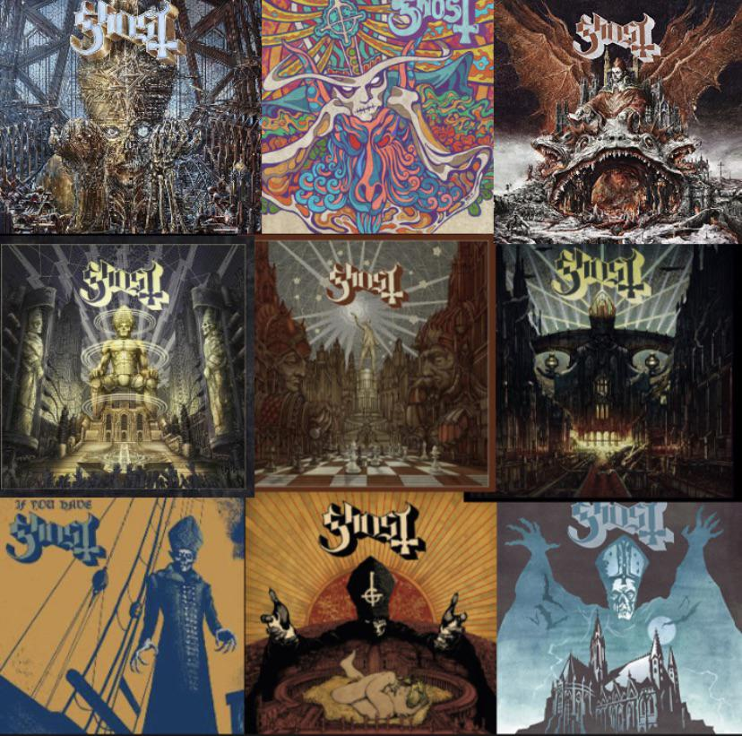

GHOST is a Swedish rock band that sing in English and consists of one permanent frontman, Tobias Forge, who plays roles as different characters. Instremental roles are played by various musicians who tour with Forge, known as The Nameless Ghouls. The band is known for hits like "Mary On a Cross", "Cirice", "Rats", and more. The band is known for being theatrical and for its ongoing performance as a "Satanic band" within their storytelling. The band saw incredible success with "Mary On a Cross" and have since been performing many sold out shows across their tours. More on the band can be found on their Fandom Wiki page
GHOST is one of my favorite bands because of their music and artistry. It is unique to find a musical group that has such a controversial theme and an ongoing story where the lead singer takes on different personas as new albums are released. The effort, artistry, and boldness to criticize Christian church systems by representing a fictional Satanic church is both inspiring and entertaining. Because I love their music so much, I will rank their albums based on my personal taste with consideration towards how many songs I like and the overall album theme. You can find all of these albums on their Spotify
This ranking is based on my attachment to certain songs on the album/EP and how likely I am to listen to the album in full at any given moment. Infestissumam is a flawless album to me because of how much I love every song and how it opitimizes the themes of GHOST as a whole, leaning heavily into Satanic worship and dark messages. Prequelle and Impera hold second and third for containing some of my all-time favorite GHOST songs like "Spillways" and "Witch Image". On the other hand, Phantomime sits at the bottom for having the weakest lineup of songs that feel out of place next to the rest of GHOST's discography, and most likely due to the fact that the entire EP is made of covered songs.
| Album Name | Release Date |
|---|---|
| Infestissumam | 2013 |
| Prequelle | 2018 |
| Impera | 2022 |
| Meliora | 2015 |
| Skeletá | 2025 |
| If You Have Ghost | 2013 |
| Seven Inches of Satanic Panic | 2019 |
| Opus Eponymous | 2010 |
| Popestar | 2016 |
| Phantomime | 2023 |